나를 위한 제모 클리닉
나를위한 산부인과의
“제모 클리닉”
은
의료진의 노하우와 기술력으로
털의 깊이와 굵기, 밀도에 따라
최적화하여 제모 효과를 기대할 수 있습니다
- 시술시간 20분 내외
-
회복기간
시술 후
일상생활 가능 - 입원여부 없음
-
마취방법
마취크림 도포,
수면마취 가능 - 시술횟수 약 3~5회 이상
나를위한 프리미엄 제모
프리미엄 제모 레이저 Apogee+로 클래스의 차이를 경험해보세요.
털의 깊이와 굵기, 밀도에 따라 최적화하여 제모효과를 높였습니다.
-
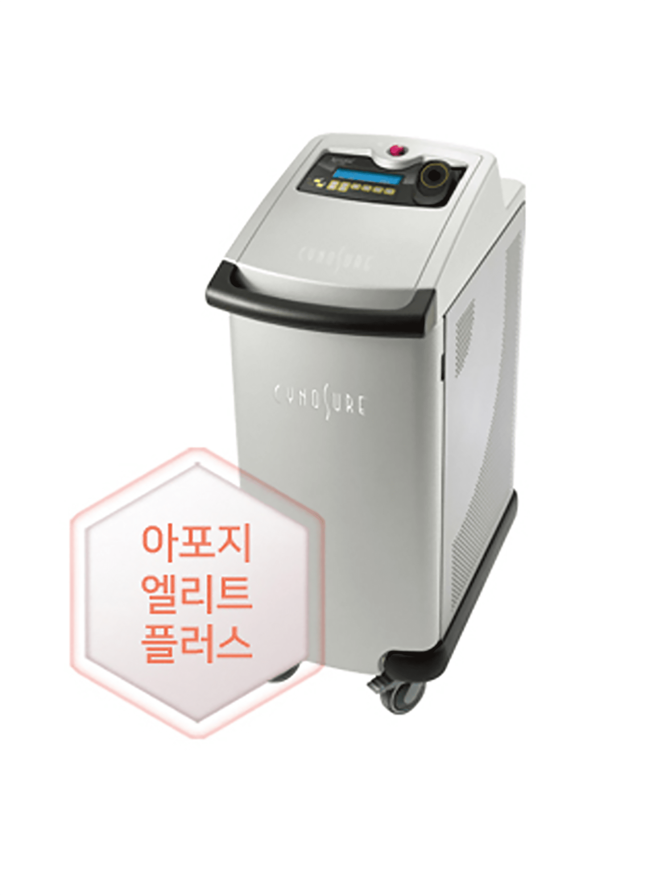
아포지 엘리트플러스- 단계별 피부 상태에 따른 맞춤 치료
- 멜라닌에 선택적으로 적용하여 멜라닌 제거
-
755nm , 1064nm 2개의 파장으로
효과적인 미백 시술
고출력의 755nm 파장의 알렉산드라이트는
멜라닌 흡수율이
높아 멜라닌에 선택적으로 작용하여
멜라닌 제거에 적합
1064nm 엔디야그 레이저는 검은 피부와 깊은 멜라닌 치료,
혈관과 수분에도 효과적으로 반응
나를위한
프리미엄 제모 순서
-
모발 및 모낭
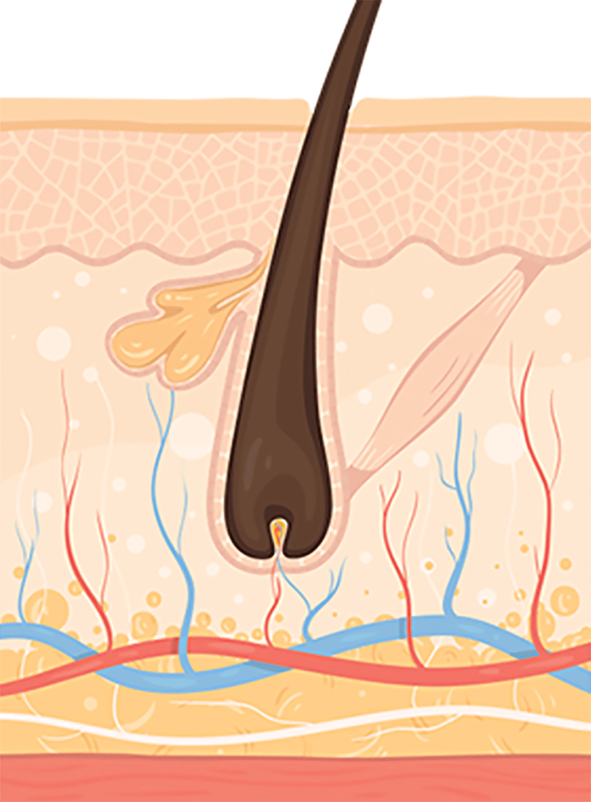
-
레이저 조사 - 모낭 공격
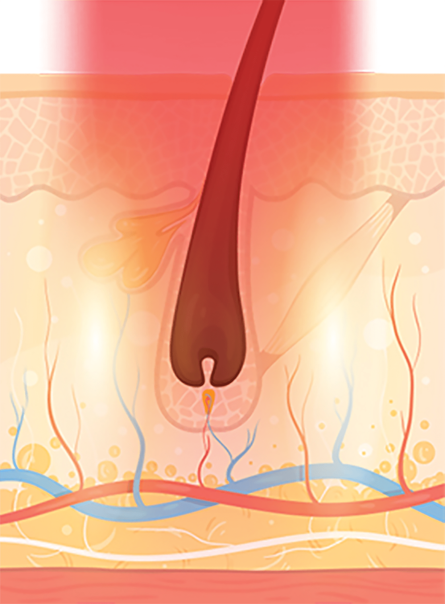
-
모발 탈락 및 모낭 파괴
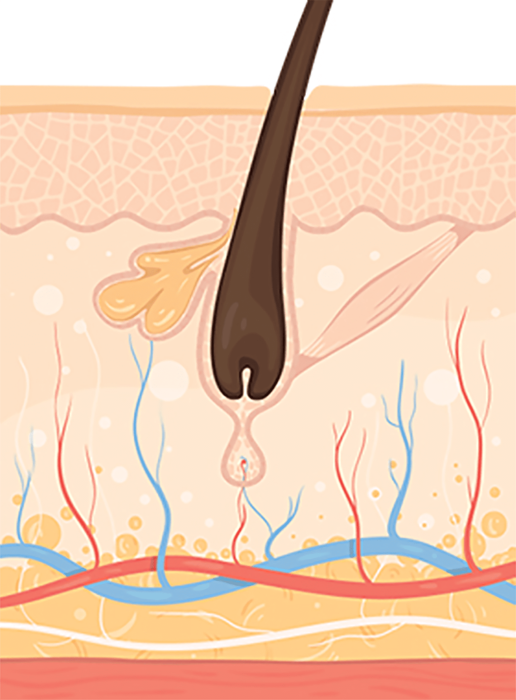
-
제모상태 유지
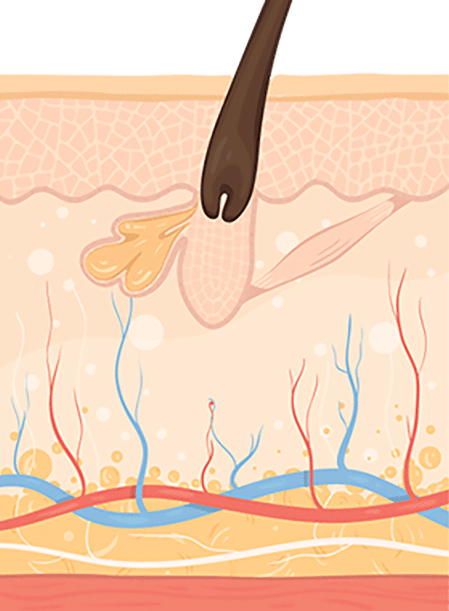
모근 깊이까지 침투하여 모발 재생산을 억제하기 때문에
영구 제모에 가까운 효과를 기대할 수 있습니다.
착색은 최소화
기분 좋게 뽀송뽀송
나를위한 프리미엄 제모로 기분 좋을 수 밖에!
-
개인의 피부 상태를
고려한
시술 계획으로
흉터 최소화 -
약 20분 가량의 짧은
모시술과 회복시간 축소 -
자체 쿨링 시스템으로
통증을 낮춤 -
시술 후
반영구적인 제모 효과
-
755-nm
알렉산드라이트 레이저로
빠르고 강력한
Apogee+의 제모효과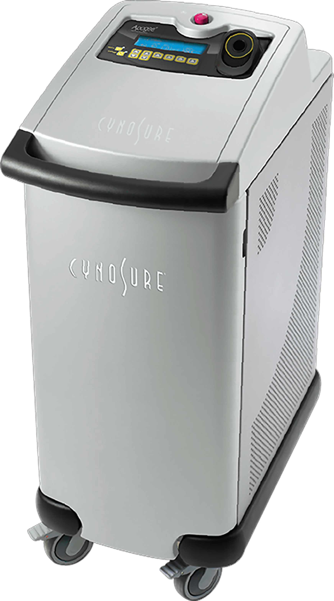
Apogee+는 755-nm 알렉산드라이트 레이저로
주위 피부조직 손상 최소화하고,
모낭만을 선택적으로 파괴해 부작용 최소화
영구 제모 효과를 볼 수 있습니다. -
755-nm
알렉산드라이트의 장점롱펄스 755-nm 파장은 멜라닌 흡수율이 매우 높은 반면,
산화혈색소와 수분에 대한 흡수율은 낮기 때문에
주위 피부조직에 대한 손상 없이 모낭을 선택적으로 타겟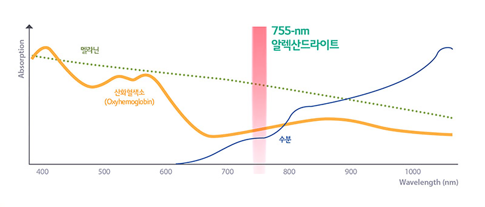
-
Apogee+ 제모
시술 만족도 UP!Apogee+ 시술을 받은 50명의 남녀 환자 대상
12개월의 추적 조사 결과
약 80%의 환자가 제모효과에 대해
만족 또는 매우 만족으로 대답하여
제모의 긴 지속성과
높은 환자 만족도를 입증했습니다.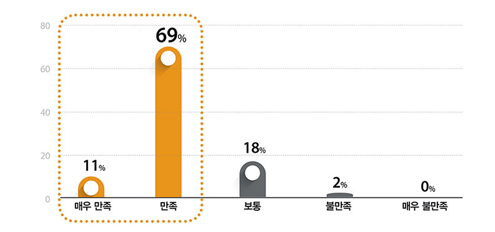
프리미엄 제모 부위
나를위한 프리미엄 제모 가능 부위

Q & A
-
프리미엄 제모 효과는 어떻게 나타나나요?
시술 후 털이 부분적으로 빠지고 털의 성장속도가
느려지며
털의 굵기 또한 가늘어집니다. 그리고 보통
시술 부위와 털의 굵기,
양에 따라 차이는 있으나
일반적으로 50~60% 이상은 효과를
기대할 수 있습니다. -
시술 후 면도는 어떻게 해야 하나요?
제모 후 3일 정도는 면도를 하지 않도록 주의하셔야
하며
상담 진행 후 면도기를 사용하는 것이 좋습니다. -
시술 전 털을 뽑아도 되나요?
시술 6주 전 부터는 시술 부위의 털을 뽑지 않는
것이 좋습니다.
나를위한
브라질리언 제모
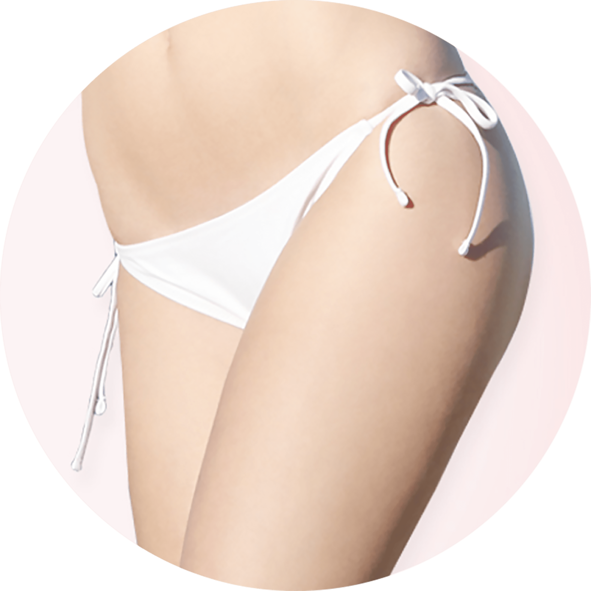
브라질리언 제모는 비키니 라인에서 좀 더 나아가
안쪽인 회음부부터 항문까지 제모를 해주는 방법으로
보다 깔끔하고 위생적인 상태를 가꿀 수 있다는
장점을 가지고 있습니다.
브라질리언 제모 부위
-
비키니 라인 (속옷 바깥으로
노출되는 부분) -
음모 (성기 주변 및 속옷 안쪽)
-
회음부 (질 입구에서 항문 사이)
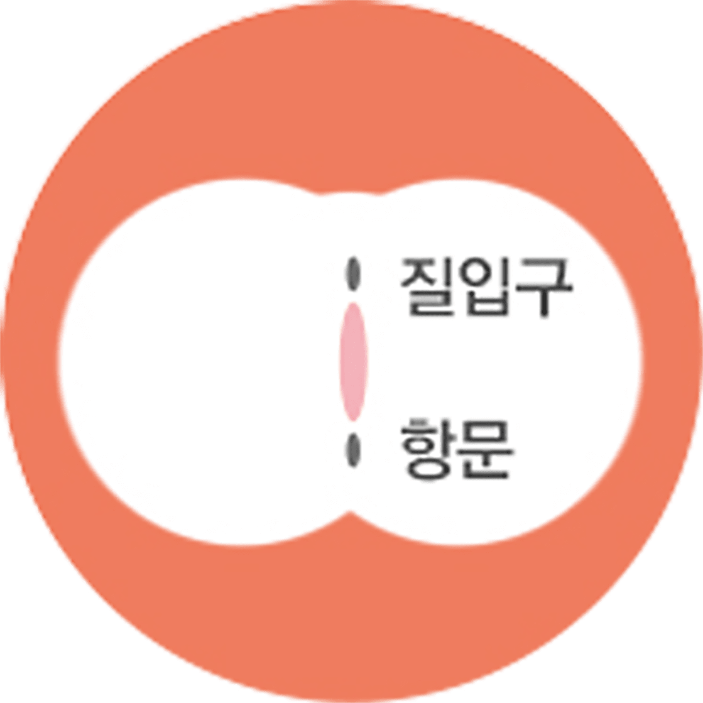
-
항문 (항문 주변 부위)
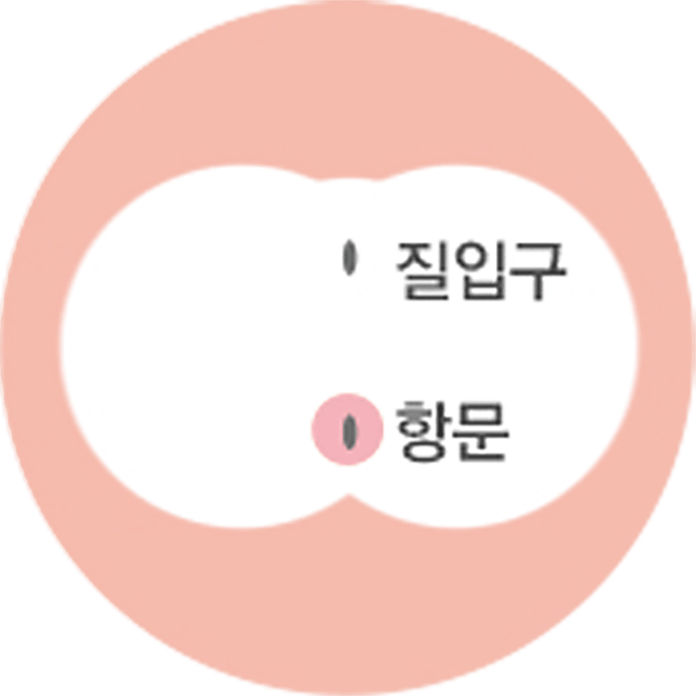
나를위한
브라질리언
제모의 장점
비키니 라인부터 시크릿 라인까지 매끈하게
-
다른 피부 조직의 손상은 최소화
해당 모낭만을 선택적으로 파괴 -
제모 전용 레이저로 통증을 줄여
간편하게 시술 -
환자가 원하는 범위, 원하는 정도
충분한 상담 후 맞춤 시술 -
털의 굵기와 상태에 따라
최적의 레이저 치료 - 민감 부위도 꼼꼼하고 섬세하게
-
브라질리언 제모시
항문 부위까지 함께 제모
프리미엄 제모는 왜
나를위한 산부인과?


-
여의사가 직접 1 : 1
맞춤제모 실시.
꼼꼼한
시술과 다년간 축적된
노하우로 만족스러운 제모 -
여성 전용
1인 프라이빗 룸으로
한분 한분이 편안한 치료를
받으실 수 있습니다. -
프리미엄 아포지
엘리트플러스로
강력해진 출력,
최대 2.5배 빠른 시술
에어 쿨링으로 통증 감소

프라이빗한 휴식 과 회복
나를위한산부인과에서는 치료를 받는
환자분들이
긴장을 완화하고 편안한
마음으로 쉬실 수 있도록
고급스럽고
편안한 분위기의 1인 회복실을 제공합니다.
제모
시술 후 주의사항
시술 후 주의 사항은 개인 차가 있을 수 있습니다.
-
01
시술 후 1 ~2일 정도 홍반기와 가려움을 동반한 모낭염 증상이
발생할 수 있습니다.
해당 증상이 의심될 경우 병원으로 연락하시거나
내원해 주시면 빠른 처치가 가능합니다. -
02
시술 후 일시적으로 피부가 건조할 수 있으니 보습제를 바르실 것을
권장 드립니다. -
03
시술받는 동안 썬탠이나 스크럽제 사용은 어려우시며, 시술 후 7일간
사우나, 찜질방, 수영장 출입은 피해주세요. -
04
시술 후 노출되는 부위는 자외선 차단제를 꼭 발라주세요.
-
05
간혹 시술 부위의 피부색이 어두운 경우, 화상 및 색소 침착 가능성이
있습니다.
만약 진물이 나거나, 딱지가 심하게 생긴다면 본원으로
연락해 주세요. -
06
시술 후 남아있는 모발은 1~2주에 걸쳐 서서히 탈락합니다.
시술 기간 동안 면도는 가능하나, 모발을 뽑는 행위 및 왁싱은 삼가
주세요. 모근이 탈락하여 시술 효과가 떨어질 수 있습니다. -
07
몇 번의 시술로 100% 영구 제모가 되는 것은 아니지만, 시술 전 굵고
진하며 많던 털들이 점차 가늘고 연해지며 수가 줄어듭니다.
가늘고
연한 털의 경우, 진하고 굵은 털에 비해 효과가 더디게 나타나며
치료 횟수가 추가될 수 있습니다.
통상 10회 정도 시술을 받으시면
거의 안 보일 정도로 모량이 감소하게 됩니다.
이후 자라는 모발의
개수 및 굵기, 신체 부위, 레이저에 대한 반응에 따라 시술 횟수를
추가해 주세요.